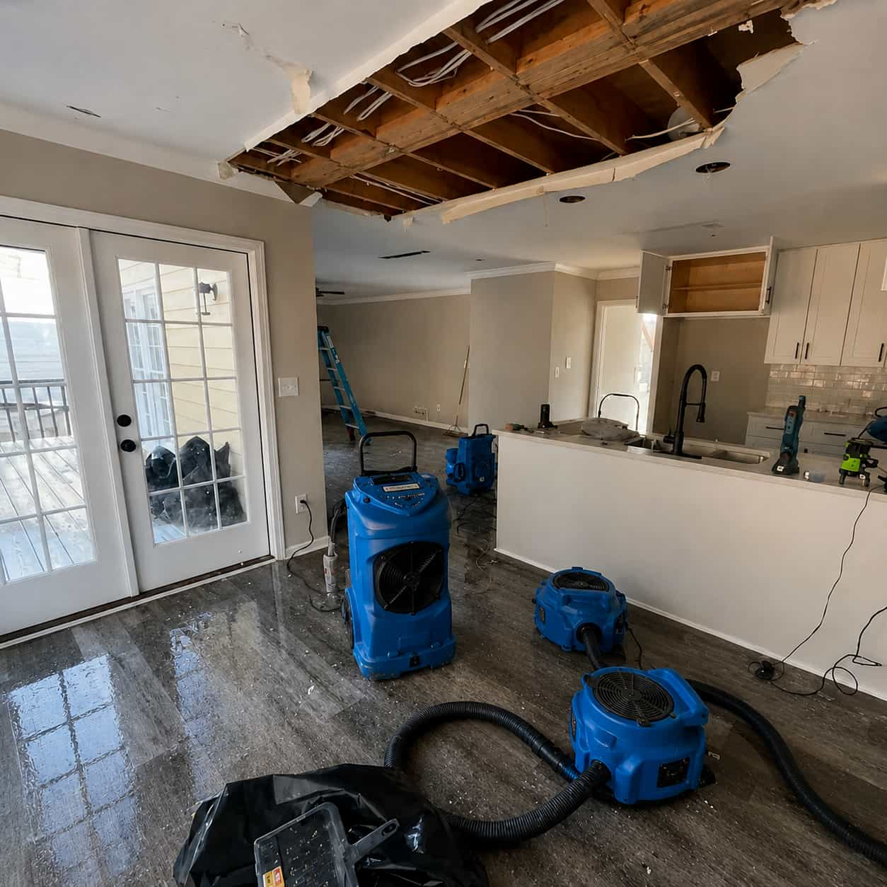
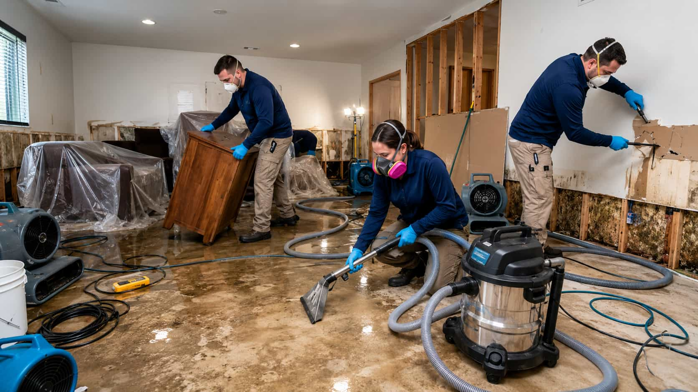

For active leaks, sudden water intrusion, standing water, and situations where fast local support may be relevant to explore.
- Active pipe or appliance leak
- Water spreading across floors
- Ceiling or wall water concerns
SERVICE OPTIONS
Aqualume helps homeowners explore relevant service directions and compare local provider options based on the type of water damage concern they are facing.
EXPLORE THE OPTIONS
Water concerns can overlap. Start with the direction that best reflects your situation, then explore the related details and local options at your own pace.

Explore support paths for active leaks, sudden water intrusion, and situations where fast local support may be needed.
For active leaks, sudden water intrusion, standing water, and situations where fast local support may be relevant to explore.
Explore options connected to standing water, damp materials, and drying-related support directions.
Explore service directions for broader water intrusion situations after flooding or a significant indoor water event.
Explore support paths that may fit a burst pipe, ongoing leak, or water concern around plumbing-connected areas.
Explore local support options for visible water, ongoing dampness, or moisture concerns in lower-level spaces.
Explore relevant directions when lingering moisture, damp materials, or visible changes raise mold-related concerns.
A DIFFERENT WAY TO START
WITHOUT A CLEAR START
WITH AQUALUME
NOT SURE WHERE TO START?
Water damage concerns can overlap. A leak can lead to standing water, moisture can turn into mold concerns, and a basement issue may need more than one support path. Aqualume helps you begin with clarity, even if the full picture is still unfolding.
Start Your Request
SERVICE PATH OVERVIEW
These service paths are designed to help you start from the concern in front of you, without needing to solve every detail before you begin.
URGENT CONCERNS
Explore support paths related to sudden leaks, active water spread, and fast-moving indoor water issues.
WATER REMOVAL & MOISTURE CONTROL
Explore categories related to water extraction, drying, and ongoing moisture inside affected areas.
RECOVERY & FOLLOW-UP CONCERNS
Explore service directions that may fit broader recovery concerns after flooding or long-term moisture exposure.
READY TO START?
Tell us what is happening and begin exploring relevant local provider options through one structured request.
Independent platform. Homeowner choice always comes first.